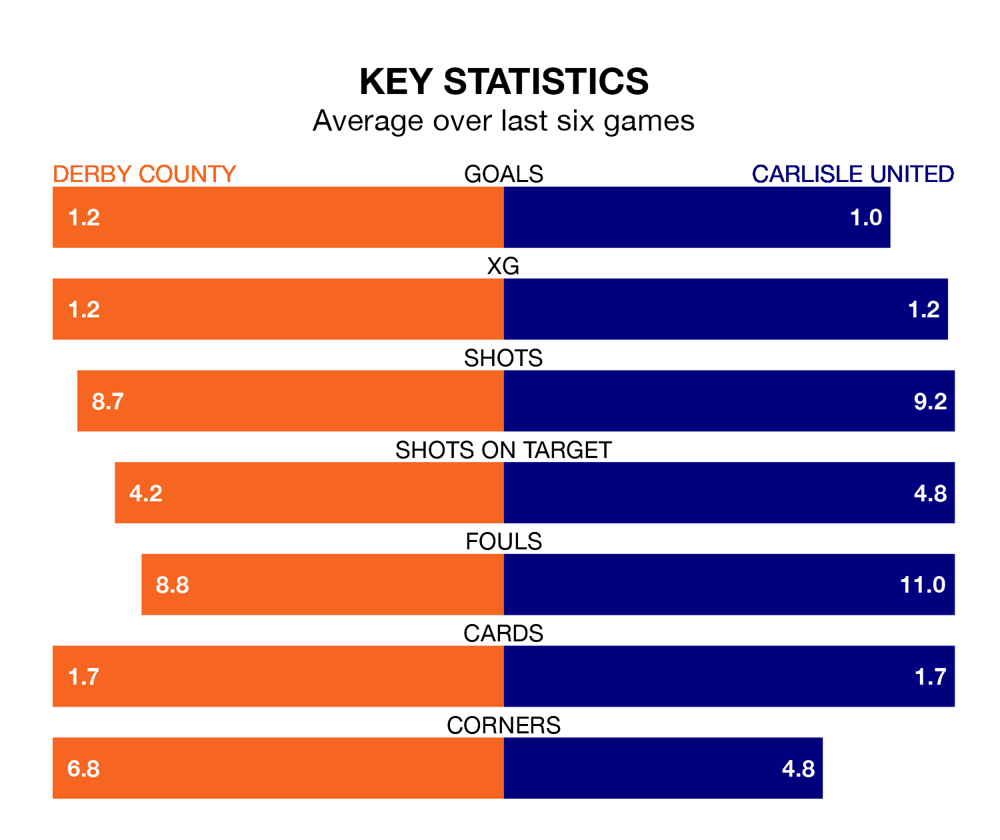

Relegation candidates Carlisle United face a challenge away against high-flying Derby County at Pride Park Stadium on Saturday.
Carlisle United are rooted to the bottom of the EFL League One table, and have picked up seven wins and nine draws in their 45 games to date.
The Rams, meanwhile, are second in the standings with 89 points, having won 27 and drawn eight, and are five points behind table-toppers Portsmouth.
With Joe Wildsmith between the sticks, Derby can rely on one of the league's safest pair of hands. He has kept 19 clean sheets in his 39 appearances this season, and no 'keeper has prevented the opposition scoring more often in EFL League One.
In Carlisle's net, Harry Lewis has two clean sheets in 19 games. He has conceded a goal every 48 minutes, nearly three times as often as the 128 minutes between goals for Wildsmith.
With 76 goals in 45 games so far this season, County are scoring more than average in the league with 1.7 goals per game. And they are conceding fewer than average, letting in 37 goals at a rate of 0.8 per game.
United, meanwhile, are below average scorers, with 0.9 goals per game, compared to a league average of 1.3. They have conceded 1.8 goals per game.
The Rams are in reasonable form in EFL League One, with three wins and two draws from their last six games.
With two wins and four losses over that period, the visitors' form is worse – they have taken six points from 18, compared to the home team's 11.
Derby's last match was on Saturday, a 1-0 win against Cambridge United, with Nathaniel Mendez-Laing getting the goal for the Rams.
Carlisle lost 3-1 against Wycombe Wanderers last time out, also on Saturday, with Alfie John Mccalmont on the scoresheet.
Updated: 07:59 (UTC), 26/04/24